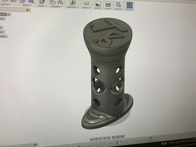
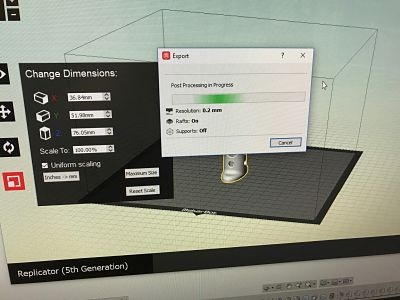
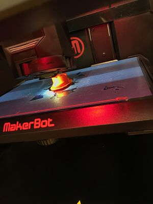
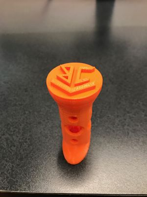
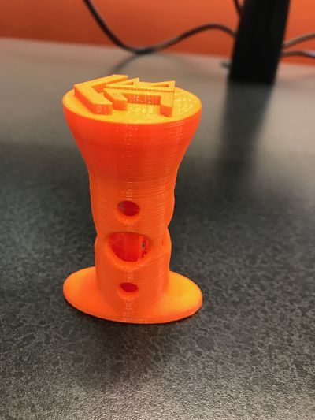
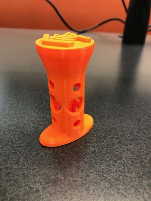

Rotation 2
3D Printing
This Rotation was dedicated to learning CAD (Computer Aided Design). Using Autodesk Fusion 360, I designed a wax seal to be 3D printed
I had difficulty using the software at first, but it got easier as I used it more. I am by no means an expert but tasks such as navigating,
designing, and placing things have gotten easier. Things such as placing a circle where I needed it became far easier as I worked with the
program
 
Pictured above are two pictures showing the design on the computer and te design being exported. However, when the print completed I realized
I forgot to make the stamp a mirror so it would stamp in a readable fashion. I then adjusted my design to fix this error.

Pictured below are images of the final product with an adjusted stamp face that will produce a satisfactory seal.
  